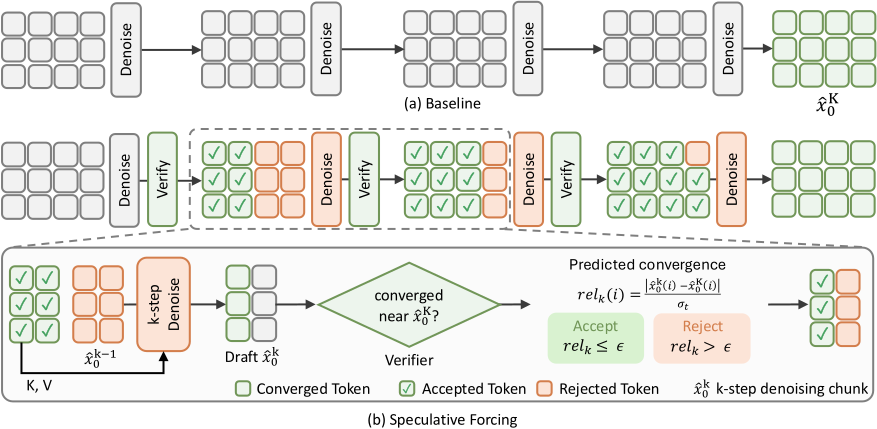

Think of a painter retouching a scene in four passes. The sky that looks the same as the last frame is done after the first pass, while a face that just turned toward the camera needs all four. Speculative Forcing has an assistant check each patch after every pass and lift the brush from the finished ones, while those patches still serve as reference for the rest.
한 장면을 네 번에 걸쳐 덧칠하는 화가를 떠올려 보자. 지난 프레임과 똑같아 보이는 하늘은 첫 번째 덧칠로 끝나지만, 방금 카메라 쪽으로 돌아선 얼굴은 네 번 모두 필요하다. Speculative Forcing은 조수가 덧칠할 때마다 조각별로 확인해 다 된 곳에서는 붓을 떼게 하고, 그 조각은 나머지를 칠할 때 참고로 계속 쓴다.
How it works: draft, verify, commit작동 방식은 초안, 검증, 확정
Accepted tokens drop out of the next denoising pass but stay visible as keys and values. So each later pass costs only the rejected tokens.
받아들여진 토큰은 다음 디노이징 계산에서 빠지지만 키와 값으로는 계속 보인다. 그래서 이후 단계는 거절된 토큰만큼만 계산한다.

- Step 1: compare with clean history.1단계에서는 깨끗한 이력과 비교한다.A draft close to any earlier clean token, anywhere in the window, is accepted at once.윈도 안 어디든 이전의 깨끗한 토큰과 가까운 초안은 바로 받아들인다.
- Later steps: check stability or ask the head.이후 단계에서는 안정성을 보거나 헤드에 묻는다.Training-free: little change between drafts. Learned: a 3-layer 3D conv predicts the remaining gap.학습이 필요 없는 방식은 초안 사이 변화가 작은지 보고, 학습 방식은 3층 3D 합성곱이 남은 차이를 예측한다.
- Smooth, then commit.부드럽게 맞춘 뒤 확정한다.Scores are smoothed across neighbors so decisions stay coherent; the generator itself is never retrained.이웃 토큰끼리 점수를 부드럽게 맞춰 판단이 들쭉날쭉하지 않게 하고, 생성기 자체는 다시 학습하지 않는다.
Key point: decide per token, not per chunk핵심은 청크가 아니라 토큰 단위로 판단하는 것
At the same average step budget, token-wise acceptance drifts less than full 4-step sampling, while chunk-wise and heuristic signals drift more. Settled tokens stop accumulating small errors.
평균 단계 수가 같을 때 토큰 단위 승인은 4단계 전체 샘플링보다도 드리프트가 적고, 청크 단위나 휴리스틱 신호는 더 크다. 이미 자리 잡은 토큰에는 작은 오차가 더 쌓이지 않기 때문이다.
Results: four-step quality at two-step speed2단계 속도로 4단계 품질
Uniform 2-step is as fast but loses 0.6 VBench points; Speculative Forcing keeps the 4-step score. It spends the saved steps only where tokens still move.
일괄 2단계도 속도는 비슷하지만 VBench가 0.6점 떨어지고, Speculative Forcing은 4단계 점수를 지킨다. 아낀 단계를 아직 움직이는 토큰에만 쓰기 때문이다.
| Sampler | Mean steps | FPS | VBench Total |
|---|---|---|---|
| Uniform 1-step | 1.00 | 67.97 | 79.06 |
| Uniform 2-step | 2.00 | 44.54 | 82.46 |
| Uniform 4-step | 4.00 | 26.40 | 83.08 |
| Speculative Forcing, training-free | 1.65 | 43.61 | 83.12 |
| Speculative Forcing, learned head | 1.68 | 41.74 | 83.21 |
In a distilled sampler, intermediate clean estimates are already usable outputs, so stopping per token is often safer than skipping whole steps. A tiny head reading frozen features was enough to predict which tokens are done.증류된 샘플러에서는 중간 단계의 깨끗한 추정도 이미 쓸 만한 출력이라, 단계를 통째로 건너뛰기보다 토큰마다 멈추는 편이 더 안전한 경우가 많다. 고정된 특징을 읽는 작은 헤드 하나로 어떤 토큰이 끝났는지 충분히 예측할 수 있었다.
Tested on two 1.3B four-step generators with VBench only, and quality gaps are fractions of a point. Thresholds and the head are calibrated per generator and per setting, and wall-clock gains shrink to 1.35× once scenes change quickly.시험한 것은 1.3B 크기의 4단계 생성기 두 개이고 평가는 VBench뿐이며, 품질 차이는 1점에도 못 미친다. 임계값과 헤드는 생성기와 설정마다 따로 맞춰야 하고, 장면이 빠르게 바뀌면 실제 속도 향상은 1.35배로 줄어든다.